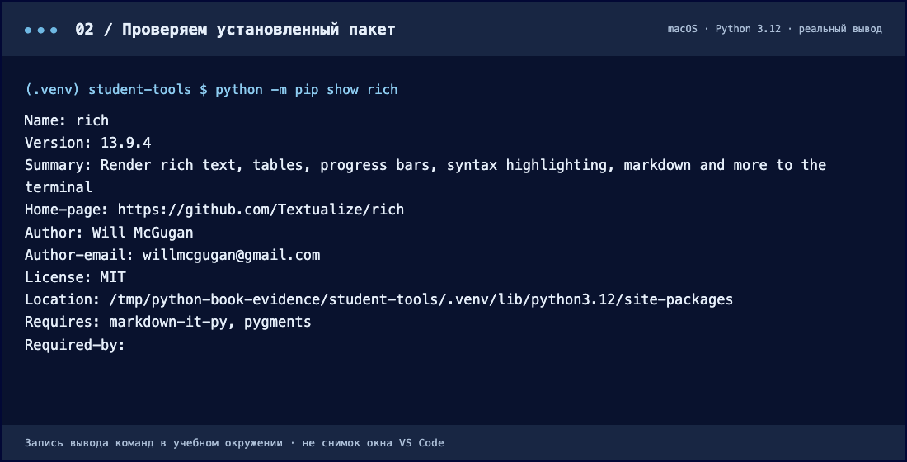

Добавляем первую зависимость
Устанавливаем Rich в окружение проекта и меняем только способ вывода.
Что именно мы устанавливаем
В Python есть стандартная библиотека — например, sys и pathlib. Она приходит вместе с Python. Rich — сторонняя библиотека для оформления терминального вывода. Она отдельно устанавливается в окружение и становится зависимостью нашей программы.
pip — менеджер пакетов Python. По умолчанию он получает пакеты из PyPI — каталога Python-проектов. Имя устанавливаемого дистрибутива и имя в импорте не всегда совпадают; для Rich в обоих местах используется rich.
python -c "import rich"Установите и проверьте
- Где
- Активная .venv, терминал в student-tools.
- Действие
- Выполните python -m pip install rich. Дождитесь окончания; затем pip show rich.
- Результат
- В выводе есть Name: rich, Version и Location внутри .venv.
- Проверка
- Выполните python -c "import rich". Отсутствие ошибки означает успешный импорт.
python -m pip install rich
python -m pip show rich
python -m pip listpython -m pip запускает pip именно выбранного Python. Так меньше вероятность установить пакет через случайный pip из другого окружения. Для загрузки нужен доступ к сети и индексу пакетов.
В pip show rich найдите Name, Version и Location. Последнее поле должно указывать внутрь вашей .venv. В pip list появятся Rich и его собственные зависимости — это нормально.

Обратите внимание на Location: пакет установлен в окружение этого проекта. Версия на вашем компьютере может отличаться от зафиксированного учебного набора.
Скачать текст вывода ↓ · Нажмите на изображение, чтобы увеличить.Продолжим тот же main.py
- Где
- Редактор: существующий main.py.
- Действие
- Замените содержимое кодом ниже → сохраните → python main.py.
- Результат
- Тот же результат 4.40 выводится средствами Rich.
- Проверка
- Если в терминале нет цвета, проверьте число и отсутствие ошибок: поддержка цвета зависит от терминала.
Замените содержимое существующего main.py версией ниже. Расчёт не меняется: добавляются импорт Console и вывод через console.print. Импорт получает класс из модуля rich.console; Console() создаёт объект для работы с терминалом.
from rich.console import Console
def calculate_average(values: list[int]) -> float:
if not values:
raise ValueError("Список оценок не должен быть пустым")
return sum(values) / len(values)
def format_average(value: float) -> str:
return f"Средний результат: {value:.2f}"
def main():
values = [5, 4, 5, 3, 5]
average = calculate_average(values)
console = Console()
console.print(f"[bold green]{format_average(average)}[/bold green]")
if __name__ == "__main__":
main()При отдельном скачивании файл называется 02-rich-main.py: перенесите его содержимое в ваш main.py. Метки [bold green] и [/bold green] задают оформление Rich. В обычном терминале результат будет зелёным; при перенаправлении вывода цвет может отсутствовать.
python main.pyСредний результат: 4.40Проверяем изоляцию без догадок
Выполните deactivate и снова проверьте путь к Python. На macOS/Linux базовая команда может называться python3. Если в базовом окружении Rich отсутствует, повторный импорт закончится ошибкой. Если установлен — ошибки не будет. Изоляцию подтверждает путь и набор пакетов, а не обязательное падение программы.
Перед продолжением снова активируйте .venv по главе 2.1.
Проверьте себя · Установка успешна, но rich не найден. Что проверить первым?
Выполните sys.executable и python -m pip show rich тем же Python, которым запускаете программу. Сопоставьте путь .venv с интерпретатором VS Code.
Документация к теме
Python: venv · Python: модули и пакеты · VS Code: Python environments · pip freeze